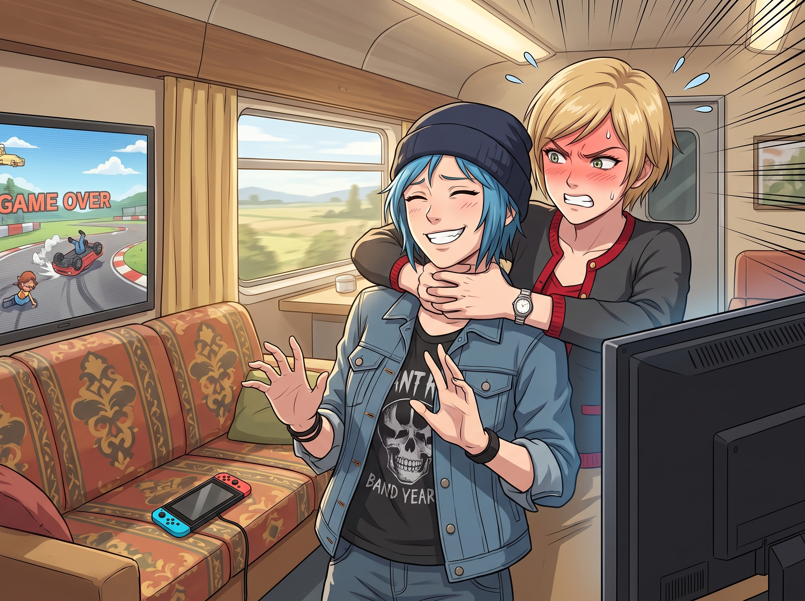

暗房裡的宇宙中心

二號車廂的週末午後，起居廂裡正上演著第不知道多少次的藍領與名媛的跨階級物理拉扯。
這次的戰場是 Switch 上的賽車遊戲。Victoria 因為連續三次在終點線前被 Chloe 精準狙擊，已經徹底失去了名媛的表情管理。她氣急敗壞地把手柄砸在沙發上，直接撲過去掐 Chloe 的脖子。
「Price！妳這個沒有體育精神的底層作弊狗！妳絕對是在我的手柄上塗了機油！」
Chloe 根本沒躲，甚至主動往後一仰，任由 Victoria 掐著她的衣領，笑得像個得逞的街頭惡霸：「願賭服輸啊大富婆！技術菜就多練，別把妳那糟糕的過彎技術怪到機油頭上。今晚的碗妳洗定了！」
兩個人在沙發上滾作一團，Chloe 仗著體力優勢，單手就把 Victoria 鎮壓在抱枕堆裡，滿臉都是那種極度放鬆、充滿活力的惡作劇笑容。
而坐在對面單人沙發上的 Max，手裡的攝影書已經有整整十分鐘沒有翻過一頁了。
一、攝影師的低氣壓冷暴力
理智上，Max 百分之百確定這兩個人之間除了想把對方丟進太平洋之外，沒有任何浪漫火花。但情感上，看著 Chloe 對 Victoria 展露那種專屬於青梅竹馬損友的肢體接觸與毫無防備的放肆大笑，一絲連她自己都覺得荒謬的酸意，還是悄悄爬上了心頭。
那本該是專屬於她的注意力。
Max 深吸了一口氣，默默地合上書。她沒有發脾氣，也沒有摔東西，而是展現出了內向型人格吃醋時最可怕的武器——絕對的禮貌與零下十度的低氣壓。
「我突然想起暗房裡還有一批底片沒顯影。」Max 站起身，語氣平靜得像是一潭死水，連看都沒看沙發上的兩人一眼，「妳們慢慢玩，玩得開心點。今晚不用叫我吃飯了。」
說完，她轉身走向暗房，喀噠一聲落了鎖。
二、晚期直男癌與名媛的診斷
「好喔！別在裡面待太久，小心化學藥劑吸太多！」
這就是擁有晚期直男思維的 Chloe Price 給出的全部反應。她完全沒察覺到空氣中那股濃烈的醋味，甚至還轉過頭，得意洋洋地用手肘撞了一下 Victoria：「看到沒？Max 都嫌棄妳的車技，眼不見為淨了。」
Victoria 揉著被壓痛的肩膀坐起來，像看著某種單細胞草履蟲一樣看著 Chloe。
作為一個從小在名利場裡察言觀色、深諳人性能量流動的頂級千金，Victoria 只用了三秒鐘就讀懂了剛才空氣裡的化學反應。她冷笑了一聲，直接拔掉了 Switch 的電源。
「Price，我一直以為妳只是大腦發育不完全，沒想到妳的視神經也已經壞死了。」Victoria 優雅地整理了一下弄皺的羊絨衫，語氣裡充滿了居高臨下的鄙視。
「妳發什麼神經？輸不起就人身攻擊？」Chloe 皺起眉頭。
「妳這隻遲鈍的藍毛狒狒，難道看不出來 Caulfield 剛才吃醋了嗎？」Victoria 翻了個巨大的白眼，「她剛才看我的眼神，如果能轉化為物理攻擊，我現在已經被沖進下水道了。她連說那句玩得開心點的時候，句號都帶著冰碴子！」
「哈？吃醋？！」Chloe 愣住了，隨後爆發出荒謬的大笑，「Max？吃妳的醋？別往自己臉上貼金了，Chase。她理智得要命，而且她知道我寧願去親一隻海鷗也不會對妳有半點興趣。」
「她理智上知道，不代表她情緒上能接受妳像隻金毛犬一樣，把所有的精力都浪費在和我打鬧上！」Victoria 恨鐵不成鋼地用抱枕砸在 Chloe 臉上，「去把妳的冷戰女朋友哄好，如果明天早上 Caulfield 因為心情不好而在我的咖啡裡下毒，我就把妳的皮卡拆成廢鐵！」
三、暗房裡的笨拙直球
暗房裡的紅燈亮著。Max 其實根本沒在洗底片，她只是坐在高腳凳上，用指甲無意識地摳著桌子邊緣，心裡暗暗氣惱自己的不成熟。
叩叩叩。門鎖傳來被鑰匙從外面擰開的聲音——整個基地只有 Chloe 有備用鑰匙。
Chloe 像做錯事的大型犬一樣，輕手輕腳地溜了進來。她沒有拐彎抹角，因為她知道自己在心思細膩的 Max 面前玩不來彎彎繞繞。
「Hey... 偉大的攝影師。」Chloe 走到 Max 身後，雙臂從後面環繞過去，下巴輕輕擱在 Max 的肩膀上，就像她們無數次做過的那樣。
Max 身體微微一僵，沒有說話，只是故意把頭偏向一邊。
「那個……大富婆剛才跟我說，妳好像生氣了。」Chloe 的語氣笨拙卻無比真誠，「對不起，Max。我就是個看不懂空氣的白痴。我跟她鬧著玩，是因為每次看到她那副高高在上卻又拿我沒辦法的吃鱉表情，我就忍不住想欺負她。那就像在逗一隻脾氣很壞的無毛貓。」
Max 終於忍不住「噗嗤」一聲漏了氣，但她立刻咬住嘴唇，強行維持住冷酷的面具：「我沒有生氣。我只是覺得妳們打遊戲的聲音太吵，影響我思考。」
「是是是，妳沒生氣，是我自己良心不安。」Chloe 敏銳地捕捉到了那絲鬆動。她收緊了手臂，將 Max 徹底鎖在懷裡，側過頭，嘴唇幾乎貼著 Max 的耳朵，聲音變得低沉且無比專注：
「Maxine，聽我說。Victoria Chase 對我來說，只是一個提供笑料和付帳單的傲嬌提款機。但妳……」
Chloe 伸出一隻手，輕輕覆蓋在 Max 放在桌面的手背上，十指交扣。
「妳是我逆轉時間也要留住的宇宙中心。就算西雅圖所有的超級模特排著隊站在我面前，我的相機鏡頭——」Chloe 頓了一下，借用了 Max 的專屬詞彙，「——永遠只會對著妳一個人對焦。」
這記毫無預警的直球情話，伴隨著 Chloe 身上那股淡淡的松木與機油香氣，直接擊穿了 Max 的防禦。
Max 的臉在紅光下偷偷紅透了。她轉過身，雖然還在用手指戳著 Chloe 的胸口，但力道已經軟得像在撒嬌：「妳什麼時候學會這種肉麻的台詞了？是不是背著我看什麼廉價的言情小說了？」
「無師自通，專門用來對付某個愛吃醋的時空旅行者。」Chloe 咧嘴一笑，低頭在 Max 的額頭上印下一個深深的吻。
暗房外的客廳裡，Victoria 聽著裡面隱隱約約傳來的笑聲，無語地翻了個白眼，端起 Kate 剛泡好的茶，優雅地抿了一口，深藏功與名。